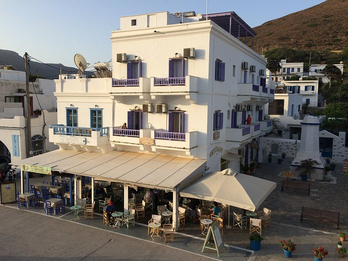

Click on the image to enlarge it.

Welcome to Pension Amorgos! We offer cozy accommodations with beautiful views of the island. Located in a tranquil area, our pension is the perfect place to relax and unwind during your stay on Amorgos.
Contact us for reservations and inquiries.
Escape to Pension Amorgos, a charming retreat located in the heart of Amorgos Island. Our cozy guesthouse offers a warm and welcoming atmosphere, making it the perfect home away from home during your visit to the island.
Experience Greek hospitality at its finest as our friendly staff cater to your every need. Relax in our comfortable rooms, each equipped with modern amenities for your comfort and convenience.
Start your day with a delicious breakfast served in our sunny courtyard, featuring fresh local ingredients and traditional Greek specialties. Explore the island's picturesque villages, pristine beaches, and historic sites, all within easy reach from our central location.
Whether you're seeking relaxation or adventure, Pension Amorgos offers the perfect retreat for your Amorgos getaway. Book your stay with us today!